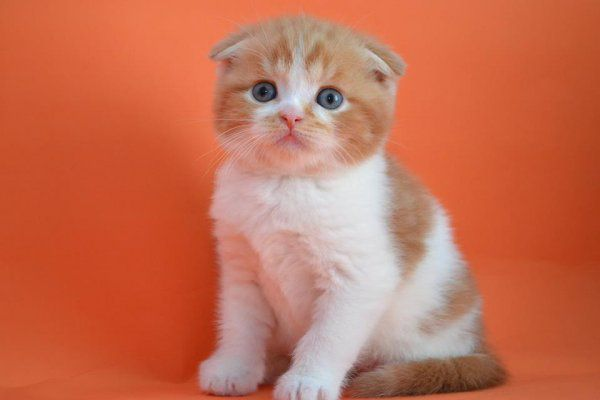
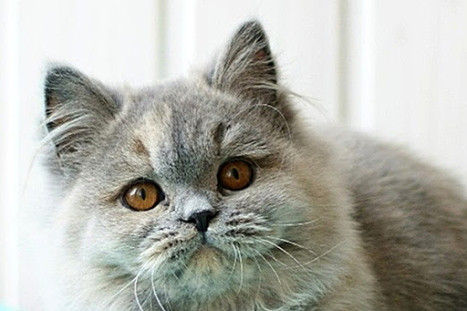
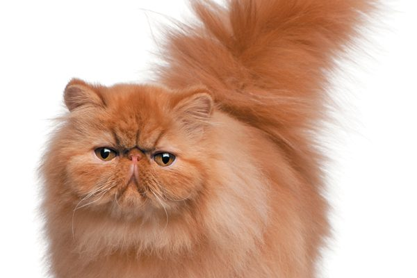
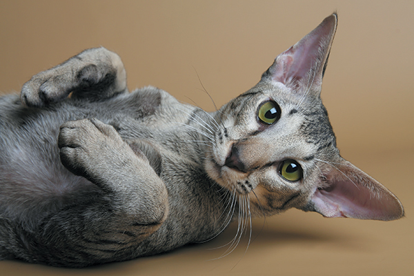
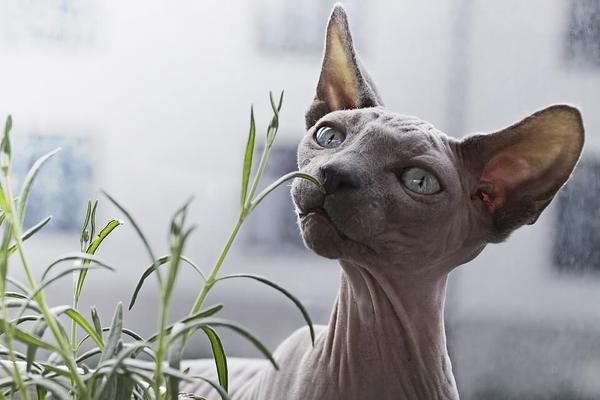
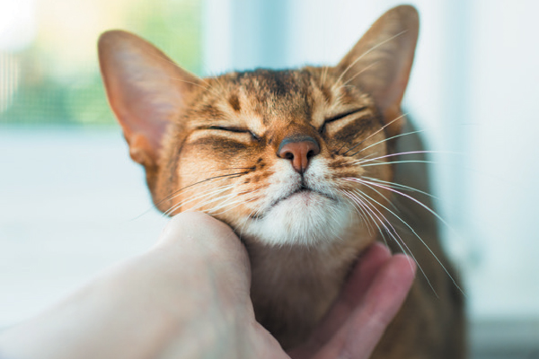
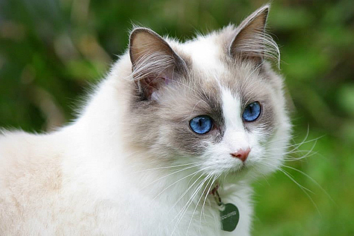
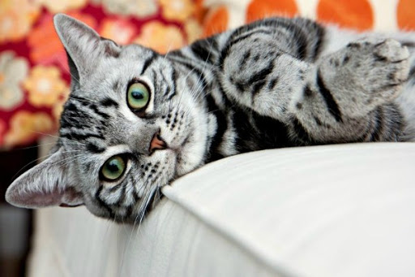
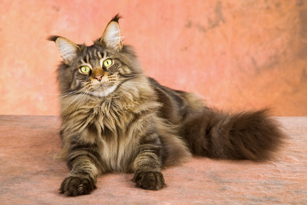
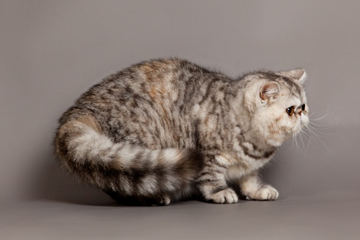

Характер шотландской кошки
Наверное, многие знают о характере британских кошек, знают об их благородном и по-английски элегантном поведении. Но если с британцами все понятно, то с шотландцами получается настоящая путаница, хотя бы потому, что шотландской породы всего бывает четыре вида. Но, к счастью, характер от вида шотландца не зависит, что безусловно, упрощает нам задачу.
Рассматривая характер шотландской кошки стоит отметить, что данная порода отличается своей манерностью и простотой одновременно. Шотландец станет верным другом, покладистым мягким комочком, который любит ласку и внимание. Будьте готовы к большому количеству совместных игр, особенно в раннем возрасте, так как характеристика шотландских кошек такова, что все представители данной породы невероятно игривые, но если им четко указать на место, то они покорно примут роль покорных слуг. Поэтому, такой кот станет отличным другом для Вашего ребенка, который с удовольствием будет возиться с Вашим любимцем.
Питание шотландской кошки
Как и кормление любого другого представителя дорогой кошки, кормление шотландских котят должно быть специальным и сбалансированным. Необходимо придерживаться специального рациона, в который будут входить сырая телятина, отварная обезжиренная птица и ее субпродукты, а также достаточное количество кисломолочных продуктов.
В питание шотландских котят не должны входить такие продукты как рыба, кости, жирное мясо, копчености, сладкое, бобовые, картофель, жареные блюда. Поэтому, перед тем как накормить Вашего питомца очередной вкусностью, лучше вбейте в поиск чем кормить шотландских кошек и лишний раз просмотрите необходимую информацию, ведь плохое питание влияет не только на здоровье, но и на внешние характеристики.

Характер британской кошки
Кошки данной породы обладают спокойным и мягким нравом. Они прекрасно подойдут семьям с маленькими детьми и другими домашними питомцами. Характер британских кошек достаточно дружелюбный. Животные очень терпеливые и покладистые, в конфликты стараются не вступать. Несмотря на то, что Вы можете стать хозяином не совсем чистокровного британца, он все равно будет прекрасно воспитываться. Также можно ознакомиться с родословной его родителей и взглянуть на их поведение вживую. Благодаря этому, уже можно будет предвидеть поведение подрастающего комочка.
Однако, несмотря на то, что характеристика британских кошек говорит об их терпеливости и не конфликтности, эти животные никогда не позволят обращаться с собой неподобающим образом. Питомец будет требовать к себе уважения. Он будет любящим членом семьи, но не очередной куклой в руках ребенка.
Питание британской кошки
Сразу же появляется вопрос: Чем кормить британских кошек? Существует несколько простых правил. Котят следует приучить к кормлению в одно и то же время. Корм должен быть свежим, остатки с прошлого приема пищи в новом корме быть не должно. Питание британских котят должно чередоваться между готовым кормом и приготовленным самостоятельно. Если Вы хотите поделиться с питомцем своей едой, исключайте соленое, острое и сладкое. Кормление британских котят не вызывает никаких сложностей, нужно всего лишь следовать небольшим советам.
Продажа британских котят осуществляется как через интернет, так и с рук. У настоящего британца обязательно будет родословная и справочка от врача о том, что этот чудесный радостный комочек бодр и абсолютно здоров. Британцы пользуются большой популярностью. Зачастую их можно встретить на выставках, где они забирают главные призы. Также это прекрасный добрый и верный друг для всей семьи.

Характер персидской кошки
Это царственное животное с изысканными манерами и кротким нравом. Характер персидских кошек спокойный и флегматичный, персы не выносят суеты и предпочитают созерцать за происходящими в доме событиями со своей удобной подушечки. Но за внешней невозмутимостью скрывается живой ум, наблюдательность и даже аналитические способности. Голос персов нежный и мелодичный, мяукают они очень редко и обычно общаются с владельцем посредством контакта «глаза в глаза».
Охотничий инстинкт персидского кота проявляется не часто: он абсолютно не приспособлен к жизни вне дома. Вальяжный, добродушный, общительный – вот наиболее типичная характеристика персидского кота. Эти кошки прекрасно позируют для фото, участвуют во всевозможных шоу и даже демонстрируют одежду для животных. В руках детей перс - живая игрушка, которая умудряется сохранять собственное достоинство даже в самой комичной и нелепой ситуации: одетый в кукольное платье или спящий в игрушечной коляске.
Питание персидской кошки
Аппетит персов избирательный и непостоянный. То, что кошка с удовольствием ела вчера, сегодня она брезгливо закапывает лапкой и вопросительно смотрит на хозяина. Расспрашивая лучших заводчиков о том, чем кормить персидских кошек, можно услышать самые противоречивые мнения. Большинство селекционеров предпочитают использовать готовые корма премиум-класса, но есть и те, кто предпочитает составлять меню самостоятельно, ориентируясь на сезон и физиологическое состояние своей кошки.
Питание персидских котят должно быть сбалансированным по питательным веществам, гипоаллергенным и легко усваиваться. Персидские кошки, питание которых основывается на принципе: «лучше меньше, да лучше» кушают часто и понемногу.

Характер ориентальной кошки
Характер ориентальных кошек хорошо подходит одиноким людям и семьям с маленькими детьми. Эта кошка любит сидеть на коленях, позволяет, чтобы ее гладили, тискали и с невероятным терпением переносит детские шалости. Она обожает игры, в которых может продемонстрировать свою ловкость, сообразительность и игривый нрав. Ориенталы хорошо дрессируются и могут аппортировать небольшие предметы.
Ориентал – кошка-компаньон, не уступающая собакам по интеллекту и преданности. В спокойной доброжелательной атмосфере характер ориентальной кошки полностью раскрывается, в ее обществе люди становятся умиротворенными и расслабленными. Поэтому этих кошек нередко используют для сеансов зоотерапии, рекомендуют тем, кто часто испытывает стрессы на работе.
Питание ориентальной кошки
Чем кормить ориентальных кошек? Они непритязательны в пище, важнее, чтобы еда была свежей, правильно сбалансированной по белкам и жирам. Жиры непосредственно влияют на качество и внешний вид шерсти, поэтому должны быть в корме ежедневно. Но их избыточное содержание приводит к потере кондиции и ожирению, поэтому злоупотреблять липидами не стоит. Правильное кормление ориентальных котят и взрослых животных – от одной до четырех капель растопленного сливочного масла на порцию. Ориентальные кошки, питание которых осуществляется «со стола», чаще страдают расстройствами пищеварения и болезнями обмена веществ

Характер сфинкса
Хоть сфинксы и не имеют шерсти, запутать в своем характере они могут похлеще персидских котов. Для начала нужно просто свыкнуться с внешним видом этой кошки. А потом Вы поймете, насколько верного друга Вы приобрели. Характер сфинкса подчеркивает то обстоятельство, что эти животные очень любят находиться в окружении внимания со всех сторон. Они могут даже требовать это не только от людей, но и от других животных. К гостям они относятся совершенно спокойно и дружелюбно, в отличие от других кошек, которые могут ревновать хозяина к гостю. Сфинксам, напротив, нравится красоваться перед большим количеством людей. Из-за того, что шерсти у них нет, они очень любят теплые места. Спят они чаще всего под одеялом. Находиться рядом с человеком для них настоящее удовольствие. Они будут искать Вашего общества повсюду, и будут весьма довольны, когда найдут. Сфинксам безумно нравится играть в прятки, потому не тревожьтесь, если вдруг кошка пропала из поля Вашего зрения. Лучше пройдитесь по дому. Наверняка сфинкс притаился где-то и дожидается того момента, когда Вы отправитесь на поиски. Старайтесь не оставлять сфинкса одного надолго. Они не любят одиночества. Надеемся, что такая характеристика сфинксов в полной мере раскрыла особенности их поведения.
Питание сфинкса
Чем кормить сфинксов - один их наиболее важных вопросов. Едят эти кошки все и аппетит у них очень и очень хорош. Они не капризны и не привередливы. Помните о том, что питание котят сфинксов должно сочетать в себе те продукты, которые имеют высокое содержание кальция и белка. Рацион может быть самым разнообразным. В обязательном порядке в него должно входить мясо (курица, говядина), сухие корма, молочные продукты, каши, яйца и всевозможные лакомства (они зависят от предпочтений Вашего питомца). Кстати, вкусы у сфинксов очень специфичные, и они часто не совпадают с привычными вкусовыми предпочтениями других пород кошек. К примеру, сфинкс может обожать шоколад. Это, конечно, прекрасно. Но баловать его лакомствами можно только если это не вредит здоровью. Кормление котят сфинкса происходит часто – до 6 раз в день. С возрастом эта цифра уменьшается до трех-двух раз.

Характер абиссинской кошки
Человек, впервые встретившийся с абиссинской кошкой, может подумать, что она подобна предкам кошки, хищным животным, которые выбирают себе жилище вдали от людей, нападают на жертву, пуская в ход зубы и острые когти. Так вот, характер абиссинских кошек совершенно иной. Все эти выводы очень ошибочны. Абиссинская кошка будет шипеть, а может даже и нападать только в том случае, если ей самой или ее детенышам грозит опасность. Но человек никогда противником не станет. Напротив, это животное очень любящее и умное. Также они очень активны, поэтому если у Вас недостаточно терпения на нее, не стоит заводить абиссинку. Они не в восторге от долгого времяпровождения на руках хозяина, им нужно много двигаться.
Питание абиссинской кошки
Если в вопросе ухода особых проблем не возникает, то в плане питания абиссинская кошка очень капризна. Чем кормить абиссинских кошек? Хоть и существуют некоторые трудности касательно питания, к новой еде она привыкает быстро. Но еду нужно разнообразить, чтобы организм усваивал все, что нужно для нормального развития.
Питание абиссинских котят в основном обеспечивается молоком матери. Но немного позже нужно будет приучать их к сухим кормам. Их нужно менять со временем, так как в разных кормах есть разные компоненты. Кормление абиссинских котят, по сути, не сложное. Важно лишь на первых порах ее приучить к разным видам пищи, чтобы в дальнейшем управляться с ней было проще. Не забывайте и о мясе, так как оно необходимо для неё.

Характер рэгдолла
Американцы - люди прагматичные. В шестидесятых годах прошлого века они решили создать идеальную домашнюю кошку с шикарным экстерьером и покладистым, доверчивым характером, адаптированных к проживанию в городских условиях. Им это удалось: именно рэгдоллу было суждено стать «супер-кошкой», которая обожает свой дом, своих хозяев и даже на мимолетную ласку отвечает басистым раскатистым мурлыканьем. Чеширский кот из сказки Льюиса Кэролла с его неизменной улыбкой — это иллюстрированная характеристика рэгдолла.
Рэгдолл считает себя полноправным членом семьи: любит вместе с домочадцами трапезничать, смотреть телевизор и даже «беседовать», вставляя между фразами владельцев свое негромкое мелодичное «мяу». Переводя внимательный взгляд темно-голубых глаз, кот, кажется, не только улавливает смысл разговоров, но и обдумывает все сказанное. Характер рэгдоллов довольно флегматичный, но это не мешает им бурно радоваться, когда хозяин возвращается после долгого отсутствия.
Питание рэгдолла
С раннего детства рэгдолл радует хозяев хорошим аппетитом и здоровым пищеварением. Взрослые коты этой породы могут весить 9-10 кг, поэтому покушать они любят. Причем, харчами не перебирают, едят и готовые сухие корма, и суп или кашу с общего стола. Если в квартире одновременно содержится несколько животных, питание котят рэгдолла требует от владельца пристального внимания. Деликатных и неконфликтных по натуре рэгдоллов попросту оттирают от миски более бойкие сородичи или собаки.
Чем кормить рэгдолла, чтобы он вырос здоровым и красивым? Позаботьтесь о том, чтобы пища кота всегда была свежей, источала аппетитный запах и содержала много витаминов.

Характер американской кошки
Характер американских кошек отличает их от остальных прекрасной способностью охотиться. Причем это не просто особенность, а настоящий талант. Кошка в меру любит двигаться и отдыхать. С окружающими ее людьми она очень дружелюбна. Больше всего американская кошка привыкает к хозяину, который ее кормит и воспитывает. С остальными членами семьи у нее вполне дружеские доброжелательные отношения. Здесь можно даже больше сказать. Американские кошки прекрасно ладят с другими питомцами, живущими в доме, в том числе и с собаками. Бесподобны отношения американской кошки с маленькими детьми. Они очень быстро находят общий язык и становятся друзьями. Кошки этой породы не привередливы в плане помещения и прогулок, так как прогулки им нужны не так часто. В большей степени они предпочитают находиться в квартире, так как любят уравновешенность и покой. Смекалка и сообразительность у кошек на высоте. Но вместе со всеми вышеперечисленными качествами им присуще большое и глубокое чувство независимости. Они очень свободолюбивы. Нередки случаи, когда американские кошки проявляли агрессию. Но беспричинно они этого делать не станут. Такая характеристика американских кошек наглядно показывает общие черты их характера.
Питание американской кошки
Люди, еще не сталкивавшиеся с этой породой часто задают вопрос, чем кормить американских кошек. Ответ на него достаточно прост: кошка должна получать все, чтобы ее организм функционировал нормально. По сути своей кошка – хищник. А как известно, хищники питаются мясом. Потому в рацион американской кошки оно обязательно должно быть включено. Важно, чтобы процент жира в мясе был как можно меньше. В первые недели жизни питание американских котят осуществляется за счет молока матери. Далее в него должны включаться те элементы пищи, которые богаты белками, так как они чрезвычайно важны для их организма. Не менее важна и рыба. Но ни в коем случае не кормите кошку сырой рыбой. Ее можно давать кошке лишь в вареном виде. В целом, кормление американских котят становится наиболее разнообразным с возрастом. Ухаживайте за своей кошкой правильно, и тогда продажа американской кошки будет проходить на необходимом уровне.

Характер мейн-куна
Если говорить о взрослом мейн-кун питание его может быть как натуральным, так и посредством кормов для кошек. Если решились кормить кота сухими кормами, необходимо выбрать наилучший из них. Обычно, такие корма помечаются знаком премиум класса, они содержат в себе все необходимые для животного элементы. Если питание мейн-куна натуральное, оно должно отвечать всем потребностям организма кошки. Для этой породы, как уже говорилось важно наличие мяса в рационе. Это может быть курятина или говядина, субпродукты. Рыбу из рациона кошки лучше исключить. Молочные продукты и овощи также должны составлять не малую долю рациона кошки. Кормить животное со своего стола не желательно, так как специи, жареное и соль очень вредны для кошек.
Питание мейн-куна
Основой характера кошки мейн-кун, является характер её хозяина. Именно глядя на его отношение к себе, кошка формирует своё отношение к окружающему миру. В целом, мейн-кун считается одной из самых неконфликтных пород кошек. Им не свойственна агрессия, ни к домочадцам, ни к другим домашним животным. Если в доме помимо мейн-кун живут собаки или другие кошки, мейн-кун займёт позицию лидера и соберёт вокруг себя весёлую компанию для игр. Кошки этой породы достаточно тихо ведут себя в доме, они не кричат и не портят вещей, часто спят. Однако если завести весёлую игру со своей кошечкой, она обязательно ответит Вам, бегая за игрушкой до тех пор, пока не устанет. Характер кошек мейн-кун можно назвать несколько позерским. Эти создания просто обожают быть в центре внимания. Если место для сна – то самое видное в доме, телевизор или микроволновка.

Характер экзотической короткошерстной кошки
Экзот – это продолжение персидского кота, поэтому все основные характеристики экзотическая кошка переняла именно у этого представителя кошачьих. Поэтому, характер экзотических короткошерстных кошек отличается особой мягкостью и кокетством, наверное, таким же мягким, как и его шерстка. Все без исключения представители данной породы отличаются невероятной игривостью. Экзоты – любители всевозможных проявлений ласки, поэтому даже если Вы дерните котика за его толстенький хвостик, он обрадуется этому и будет расценивать как толчок к новой игре.
Питание экзотических короткошерстных кошек
Что касается вопросов чем кормить экзотических короткошерстных кошек, то здесь стоит помнить о возможном ожирении в более зрелом возрасте животного. Поэтому, уже с малых лет необходимо заботится о сбалансированном питании вашего пушистого друга. Поэтому, сразу запретите кормление животного вкусностями со стола на праздниках гостями, а также в ежедневном рационе исключайте жирную пищу. Питание экзотических короткошерстных котят в первую очередь должно содержать белковые продукты, дабы укрепить еще несформировавшийся скелет. Такими продуктами могут быть творог, сметана, яйца. На первом этапе кормление экзотических короткошерстных котят может производиться с рук, постепенно приучая котенка к миске.